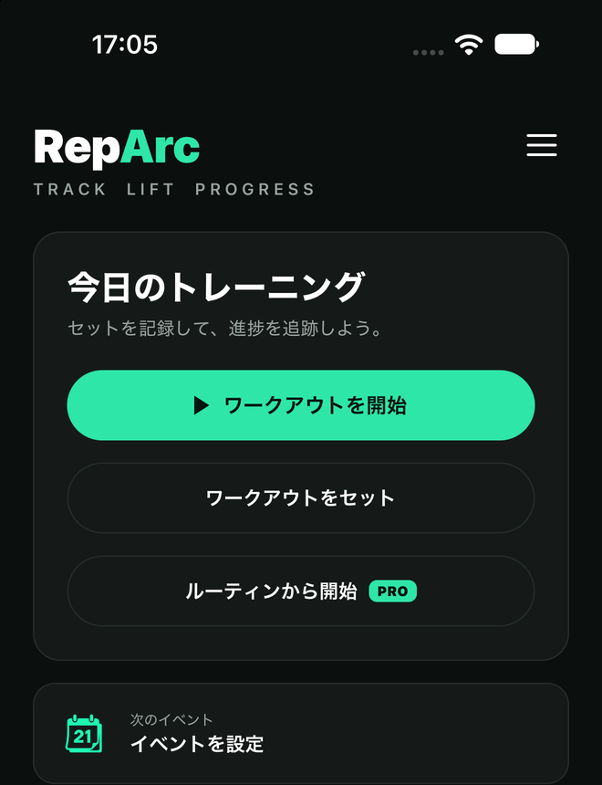
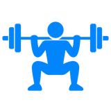
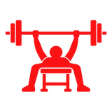
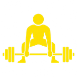
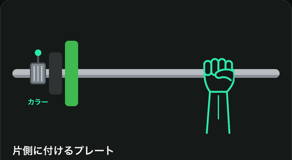

セットをすばやく記録
重量・回数・RPEと、成功・失敗をタップで記録。前回の重量を自動で入れるので、セットの合間に手間がかかりません。
パワーリフターのためのトレーニング記録アプリ
セットの記録、自己ベスト、DOTS・IPF GLポイント、試合の試技まで。パワーリフティングに必要な記録と計算を、ひとつのアプリにまとめました。
iPhone 向け ・ 基本の機能は無料


スクワット
ベンチプレス
デッドリフト重量・回数・RPEと、成功・失敗をタップで記録。前回の重量を自動で入れるので、セットの合間に手間がかかりません。
成功したセットから、種目ごとの自己ベストとBIG3の合計を自動で更新します。
種目ごとの重量と推定1RMの推移をグラフで確認。伸びている時期と止まっている時期がひと目で分かります。
いつ、何を、どれだけやったか。過去のワークアウトをカレンダーからすぐに振り返れます。
トータルと体重から、DOTSとIPF GLポイントを自動で計算。クラシック・エクイップの両方に対応しています。
今の体重が階級の上限まであと何kgか、超えているかを表示。減量の目安になります。
試合やMAX Dayの日を登録すると、ホームに残りの日数を表示します。
目標の重量を入れるだけで、片側に付けるプレートを表示。ジムにないプレートや枚数の上限、試合用カラー（片側2.5kg）にも対応しています。
目標からウォームアップの重量と回数も自動で出すので、試合当日のアップにも使えます。

試合に向けた準備をもっと細かく。Pro プランでは、次の機能が使えるようになります。
第1〜第3試技を計画し、試合当日は成功・失敗をその場で記録。1RMの目安からおすすめの試技も出せます。結果はそのまま履歴とBIG3に反映されます。
「3回を RPE8 でやるなら何kg？」をすぐに計算。早見表から、そのまま次のセットに入れられます。
「1RMの80% × 5回」のように組んでおけば、始めるときに今の1RMの目安からkgを計算します。
よくやるメニューを保存して、ホームからすぐに開始できます。
BIG3は長め、補助種目は短めなど、種目ごとに休憩時間を決められます。
ワークアウトの結果、BIG3合計、試合の結果、グラフを画像にして、SNSでシェアできます。
Pro プランは準備中です。料金や開始時期は、公開時にお知らせします。
アカウントを作ると、記録を自動でクラウドに保存。機種変更のときも安心です（無料）。
記録は CSV・JSON で書き出せます。自分のデータは、いつでも自分のものです。
重量は kg と lbs を切り替えでき、日本語と英語に対応しています。